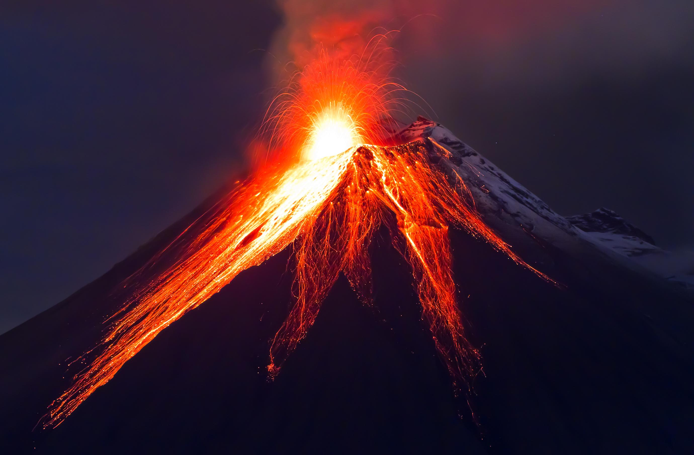
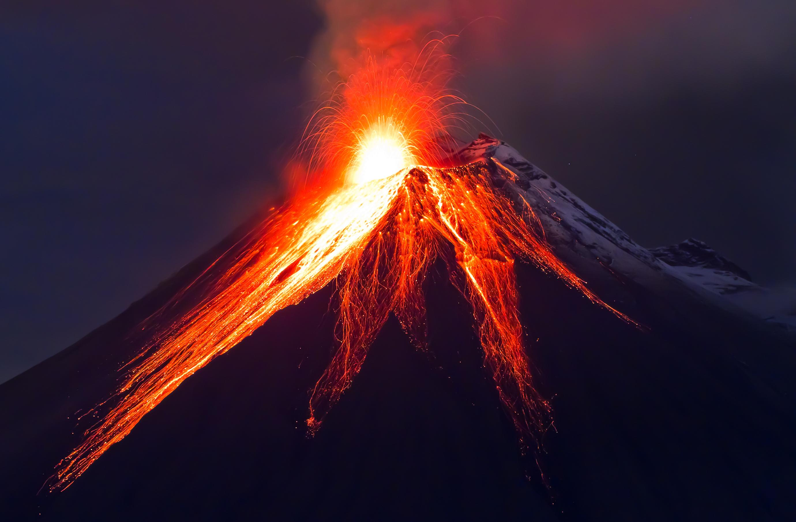

تحدث الزلازل لعدة أسباب: وجود ضغط كبير على القشرة الارضية، انزلاق صخور القشرة الأرضية فوق بعضها، او تحرك المواد المنصهرة في باطن الأرض


هزات تحدث عندما تتحرك الصخور تحت سطح الأرض. بعض الزلازل خفيفة ولا نشعر بها، لكن يمكن أن تكون الأخرى أقوى وتسبب الكثير من الأضرار. على الرغم من أنها مخيفة، إلا أن الزلازل تحدث في كثير من الأحيان في مناطق معينة في العالم، وتعطينا فرصة لفهم كيف تتحرك الصخور وكيف تتأثر الأرض بالقوى الطبيعية.


ان عالم البراكين مثير، حيث تتجلى قوى الأرض النارية بكاملها. من السحب الرمادية الشاهقة إلى أنهار الحمم البركانية الساخنة، تعتبر البراكين من أكثر الظواهر إثارة للإعجاب.


 



البراكين الخامدة هي البراكين التي لم تنفجر أو تثور لمدة طويلة، ولكنها ما زالت تحتفظ بقدر من النشاط البركاني الخفي. يتميز النشاط البركاني الخفي بوجود انفجارات غير قوية للغاية ولكنها مستمرة على مدار السنين، مما يؤدي إلى تكوين أشكال جيولوجية خاصة في المنطقة المحيطة بالبركان
تحدث نتيجه زياده منسوب المياه عن معدله الطبيعي حتي يطغي علي اليابس بكميات كبيره و كلما زادت قوة الفيضان زادت سرعه جريان المياه.
و عادة تكون بسبب الامطار الغزيرة ، ذوبان الثلوج ، العواصف و الأعاصير ، او انهيار السدود.


امطار غزيره فجائيه تتجمع في شبكات الأوديه بالأماكن المرتفعه وتندفع بشده نحو المناطق المنخفضه
يرتبط الجليد برياضه التزحلق علي سطحه في المناطق البارده وهي رياضه مهمه لجذب السياح لكن قد تتغير الصوره تماما و يصبح هذا الجليد كارثه

وهب الله الإنسان الطبيعة بمواردها و جمالها و أيضاً بأخطارها الطبيعية، فتدخل الإنسان في الطبيعة بناءً و تجميلاً مرة و إهداراً و تدميراً مرة أخرى، و بالتالي ظهرت أخطار أخرى تسمى الأخطار البيئية.
يرجع حدوثها إلى عوامل طبيعية و تدخل الإنسان معاً
تحدث اضرارا و سلبيات فقط

يرجع حدوثها إلى عوامل طبيعية فقط دون تدخل الانسان
قد تحدث اضرارا وسلبيات او يكون لها اثار ايجابية
هو احتراق الأشجار والأعشاب والنباتات الأخرى في المناطق الغابية. يحدث ذلك عادة بسبب درجات الحرارة العالية والجفاف والرياح الشديدة والنيران المفتوحة. يمكن أن يتسبب الحريق في أضرار بيئية واقتصادية واجتماعية خطيرة إذا لم يتم السيطرة عليه بشكل صحيح.